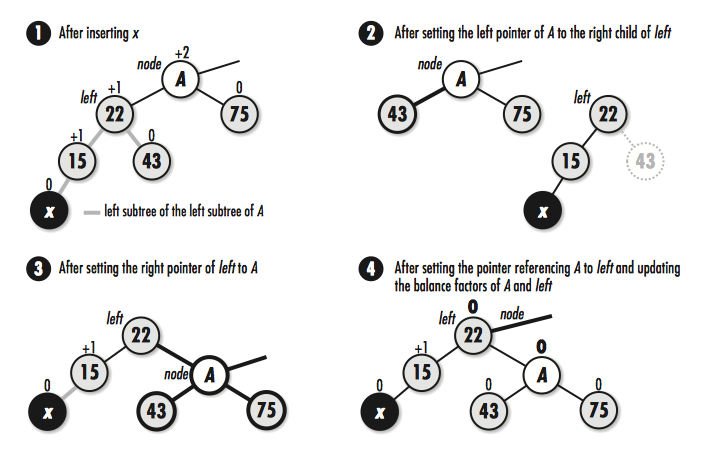
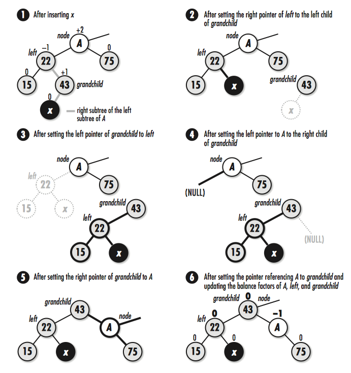

Matserting Algorithms with C-5: 树
Posted on Mon 27 March 2017 in Data Structure Algorithms
二叉树(Binary tree)

先序遍历: 根结点->左子结点->右子结点
中序遍历: 左子结点->根结点->右子结点
后序遍历: 左子结点->右子结点->根结占
层级遍历: 树根结点->下层左结点->该层右结点 (广度优先方法)

树的平衡是指在添加结点到下一层是必须保证本层的结点是满额的
二叉的接口定义
/* 这里不没包含插入和删除非叶子结点的操作, 这些操作需要根据具体的应用将树中的其他结点做相应的调整 */ /* bitree.h */ #ifndef BITREE_H #define BITREE_H #include <stdlib.h> /* 节点结构 */ typedef struct BiTreeNode_ { void *data; /* 左结点 */ struct BiTreeNode_ *left; /* 右结点 */ struct BiTreeNode_ *right; }BiTreeNode; /* 二叉树结构 */ typedef struct BiTree_ { int size; /* 为二叉搜索树使用, 比较两结点的大小, key1>key2 返回 1, 小于返回 -1, 相等返回 0 */ int (*compare)(const void *key1, const void *key2); void (*destroy)(void *data); BiTreeNode *root; }BiTree; /* 初始化 */ void bitree_init(BiTree *tree, void (*destroy)(void *data)); /* 销毁 */ void bitree_destroy(BiTree *tree); /* 插入左结点 */ void bitree_ins_left(BiTree *tree, BiTreeNode *node, const void *data); /* 插入右结点 */ void bitree_ins_right(biTree *tree, BiTreeNode *node, const void *data); /* 删除结点以及其下层全部的子结点, 并未实现只删除任意结点而不删除子结点 */ void bitree_rem_left(BiTree *tree, BiTreeNode *node); void bitree_rem_right(biTree *tree, BiTreeNode *node); /* 将两棵树合成新的二叉树, data 为根结点 */ int bitree_merge(BiTree *merge, BiTree *left, BiTree *right, const void *data); #define bitree_size(tree) ((tree)->size) #define bitree_root(tree) ((tree)->root) #define bitree_is_eob(node) ((ndoe) == NULL) #define bitree_is_leaf(node) ((node)->left == NULL && (node)->rigth == NULL) #define bitree_data(node) ((node)->data) #define bitree_left(node) ((node)->left) #define bitree_right(node) ((ndoe)->right) #endif
二叉树的实现
#include <stdlib.h> #include <stdio.h> #include "bitree.h" void bitree_init(BiTree *tree, void (*destroy)(void *data)) { tree->size = 0; tree->destroy = destroy; tree->root = NULL; } void bitree_destroy(BiTree *tree) { bitree_rem_left(tree, NULL); memset(tree, 0, sizeof(BiTree)); } int bitree_ins_left(BiTree *tree, BiTreeNode *node, const void *data) { BiTreeNode *new_node, **position; if (node == NULL) { if (bitree_size(tree) > 0) { return -1; } /* node 为 NULL 并且树为空时, 作根结点 */ position = &tree->root; } else { if (bitree_left(node) != NULL) { /* 已有左结点 */ return -1; } position = &node->left; } /* 申请内存 */ if ((new_node = (BiTreeNode *)malloc(sizeof(BiTreeNode))) == NULL) { return -1; } new_node->data = (void *)data; new_node->left = NULL; new_node->right = NULL; *position = new_node; tree->size++; return 0; } int bitree_ins_right(BiTree *tree, BiTreeNode *node, const void *data) { BiTreeNode *new_node, **position; if (node == NULL) { if (bitree_size(tree) > 0) { return -1; } position = &tree->root; } else { if (bitree_right(node) != NULL) { return -1; } position = &node->right; } if ((new_node = (BiTreeNode *)malloc(sizeof(BiTreeNode))) == NULL) { return -1; } new_ndoe->data = (void *)data; new_node->left = NULL; new_node->right = NULL; *position = new_node; tree->size++; return 0; } void bitree_rem_left(BiTree *tree, BiTreeNode *node) { BiTreeNode **position; if (bitree_size(tree) == 0) { return; } if (node == NULL) { /* 传入 NULL 删除根结点 */ position = &tree->root; } else { position = &node->left; } /* 确定是否有左结点 */ if (*position != NULL) { bitree_rem_left(tree, *position); bitree_rem_right(tree, *position); if (tree->destroy != NULL) { tree->destroy((*position)->data); } free(*position); *position = NULL; tree->size--; } } void bitree_rem_right(biTree *tree, BiTreeNode *node) { BiTreeNode **position; /* 空树 */ if (bitree_size(tree) == 0) { return; } /* 传入 NULL 删除根结点下右结点 */ if (node == NULL) { position = &tree->root; } else { position = &node->right; } /* 确认有右结点 */ if (*position != NULL) { bitree_rem_left(tree, *position); biTree_rem_right(tree, *position); if (tree->destroy != NULL) { tree->destroy((*position)->data); } free(*position); tree->size--; } } int bitree_merge(BiTree *merge, BiTree *left, BiTree *right, const void *data) { bitree_init(merge, left->destroy); /* 设置新树根结点 */ if (bitree_ins_left(merge, NULL, data) != 0) { bitree_destroy(merge); return -1; } bitree_root(merge)->left = bitree_root(left); bitree_root(merge)->right = bitree_root(right); /* 合并后树的大小 */ merge->size = merge->size + bitree_size(left) + bitree_size(right); /* 将原先的左, 右树结点的大小和根结点重置 */ left->root = NULL; left->size = 0; right->root = NULL; right->size = 0; return 0; }
遍历二叉树的实现
#include "list.h" #include "bitree.h" /* 前序遍历 */ int preorder(const BiTreeNode *node, List *list) { /* 非空结点 */ if (!bitree_is_eob(node)) { /* 将数据加入到列表尾部 */ if (list_ins_next(list, list_tail(list), bitree_data(node)) != 0) { return -1; } /* 递归左结点 */ if (!bitree_is_eob(bitree_left(node))) { if (preorder(bitree_left(node), list) != 0) { return -1; } } /* 递归右结点 */ if (!bitree_is_eob(bitree_right(node))) { if (preorder(bitree_right(node), list) != 0) { return -1; } } } return 0; } /* 中序遍历 */ int inorder(const BiTreeNode *node, List *list) { /* 非 NULL 结点 */ if (!bitree_is_eob(node)) { /* 查找左结点, 如果存在递归到末尾叶子结点 */ if (!bitree_is_eob(bitree_left(node))) { if (inorder(bitree_left(node), list) != 0) { return -1; } } /* 将结点加到队列中 */ if (list_ins_next(list, list_tail(list), bitree_data(node)) != 0) { return -1; } /* 查找右结点 */ if (!bitree_is_eob(bitree_right(node))) { if (inorder(bitree_right(node), list) != 0) { return -1; } } } return 0; } /* 后序遍历 */ int postorder(const BiTreeNode *node, List *list) { /* 非空结点 */ if (!bitree_is_eob(node)) { /* 先递归左结点, 将左结点加入到队列中 */ if (!bitree_is_eob(bitree_left(node))) { if (postorder(bitree_left(node), list) != 0) { return -1; } } /* 再递归右结点 */ if (!bitree_is_eob(bitree_right(node))) { if (postorder(bitree_right(node), list) != 0) { return -1; } } /* 结点加入到队列 */ if (list_ins_next(list, list_tail(list), bitree_data(node)) != 0) { return -1; } } return 0; }
二叉搜索树
二叉搜索树中, 左结点总比根小, 右结点总比根大
在二叉搜索树中查询一个结点, 从根结点开始, 当遇到一个比目标结点值大的结点时, 顺着该结点的左结点查找; 如果遇到的结点小于目标结点时, 则顺着该结点的右子树查找, 一直查到叶子结点
只有当二叉搜索树保持平衡时其查找效率才是最高. 一种方法是将二叉树实现为 AVL树(Adel'son-Vel'skii and Landis)
AVL树是一种特殊类型的二叉树, 它的每个结点都保存一份额外信息--结点的平衡因子
结点的平衡因子 = 左子树高度 - 右子树高度
- +1 表示左倾斜(left-heavy)
- -1 表示右倾斜(rigth-heavy)
- 0 表示平衡(left-heavy)

向 AVL树中插入一个结点时, 必须计算因为执行了插入操作对平衡因子带来的改; 其次, 如果任何平衡因子为变为了±2, 就必须从这个结点开始往下重新平衡这棵树, 重新平衡的过程称为旋转
LL(left-left)旋转
当 x 位于 A 的左子树下的左子树上, 执行 LL 旋转. 设 left 为 A 的左子树, 将 A 的左指针指向 left 的右结点, left 的右指针指向 A, 将原来指向 A 的指针改为指向 left, 旋转后, A 和 left 的平衡因子都改为 0

LR(left-right)旋转
当 x 位于 A 的左子树下的右子树上时, 执行 LR 旋转. 设 left 是 A 的左子结点, A 的子孙结点 grandchild 为 left 的右子结点. 要执行 LR旋转, 将 left 的右子结点指向 grandchild 的左子结点, grandchild 的左子结点指向 left, A 的左子结点指向 grandchild 的右子结点, 再将 grandchild 的右子结点指向 A, 最后将原来指向 A 的指针指向 grandchild

执行 LR 旋转后, 调整结点的平衡因子取决于旋转前 grandchild 结点的原平衡因子值
下方的图展示了 3 种需要考虑到的情况
如果 grandchild 结点的原始平衡因子为+1, 就将 A 的平衡因子设置为-1, 将 left 结点的平衡因子设置为 0
如果 grandchild 结点的原始平衡因子为 0, 就将 A 和 left 结点的平衡因为都设置为 0
如果 grandchild 结点的原始平衡因子为-1, 就将 A 的平衡因子设置为 0, 将 left 的平衡因为设置为+1

RR(right-right)旋转
当 x 位于 A 的右子树下的右子树上时, 执行 RL 旋转. RR 旋转与 LL 旋转是对称关系. 设 A 的右结点为 right, 要执行 RR 旋转, 将 A 的右指针指向 right 的左子结点, right 的左指针指向 A, 原来指向 A 的指针修改为指向 right
RL(right-left)旋转
当 x 位于 A 的右子树下的左子树上的时, 执行 RL 旋转. RL 旋转与 LR 旋转是对称关系. 设 A 的右结点为 right, right 的左子结点为 grandchild. 要执行 RL 旋转, 将 right 结点的左子结点指向 grandchild 的右子结点, 将 grandchild 的右子结点指向 right, 将 A 的右子结点指向 grandchild 的左子结点, 将 grandchild 的左子结点指向 A, 最后将原来指向 A 的指针指向 grandchild
如果 grandchild 结点的原始平衡因子为+1, 就将 A 的平衡因子设置为 0, 将 right 结点的平衡因子设置为 -1
如果 grandchild 结点的原始平衡因子为 0, 就将 A 和 left 结点的平衡因为都设置为 0
如果 grandchild 结点的原始平衡因子为-1, 就将 A 的平衡因子设置为 +1, 将 right 的平衡因为设置为0
二叉搜索树头文件
#ifndef BISTREE_H #define BISTREE_H #include "bitree.h" #define AVL_LFT_HEAVY 1 #define AVL_BALANCED 0 #define AVL_RGT_HEAVY -1 /* AVL 树结点结构 */ typedef struct AvlNode_ { void *data; /* 销毁结点后, 指向的数据被未被销毁时设置结点为隐藏 */ int hidden; /* 平衡因子 */ int factor; }AvlNode; typedef BiTree BisTree void bistree_init(BisTree *tree, int (*compare)(const void *key1, const void *key2), void (*destroy)(void *data)); void bistree_destroy(BisTree *tree); int bistree_insert(BisTree *tree, const void *data); int bistree_remove(BisTree *tree, const void *data); int bistree_lookup(BisTree *tree, void **data); #define bistree_size(tree) ((tree)->size) #endif
二叉搜索树实现
/* bistree.c */ #include <stdlib.h> #include <string.h> #include "bistree.h" static void destroy_right(BisTree *tree, BiTreeNode *node); /* 左旋转 */ static void rotate_left(BiTreeNode **node) { BiTreeNode *left, *grandchild; left = bitree_left(*node); if (((AvlNode *)bitree_data(left))->factor == AVL_LFT_HEAVY) { /* Perform an LL rotation */ bitree_left(*node) = bitree_right(left); bitree_right(left) = *node; ((AvlNode *)bitree_data(*node))->factor = AVL_BALANCED; ((AvlNode *)bitree_data(left))->factor = AVL_BALANCED; *node = left; } else { grandchild = bitree_right(left); bitree_right(left) = bitree_left(grandchild); bitree_left(grandchild) = left; bitree_left(*node) = bitree_right(grandchild); bitree_right(grandchild) = *node; switch (((AvlNode *)bitree_data(grandchild))->factor) { case AVL_LFT_HEAVY: ((AvlNode *)bitree_data(*node))->factor = AVL_RGT_HEAVY; ((AvlNode *)bitree_data(left))->factor = AVL_BALANCED; break; case AVL_BALANCED: ((AvlNode *)bitree_data(*node))->factor = AVL_BALANCED; ((AvlNode *)bitree_data(left))->factor = AVL_BALANCED; break; case AVL_RGT_HEAVY: ((AvlNode *)bitree_data(*node))->factor = AVL_BALANCED; ((AvlNode *)bitree_data(left))->factor = AVL_LFT_HEAVY; break; } ((AvlNode *)bitree_data(grandchild))->factor = AVL_BALANCED; *node = grandchild; } } /* 右旋转 */ static void rotate_right(BiTreeNode **node) { BiTreeNode *right, *grandchild; right = bitree_right(*node); if (((AvlNode *)bitree_data(right))->factor == AVL_RGT_HEAVY) { /* perform an RR rotation */ bitree_right(*node) = bitree_left(right); bitree_left(right) = *node; ((AvlNode *)bitree_data(*node))->factor = AVL_BALANCED; ((AvlNode *)bitree_data(right))->factor = AVL_BALANCED; *node = right; } else { /* perform an RL rotation */ grandchild = bitree_left(right); bitree_left(right) = bitree_right(grandchild); bitree_right(grandchild) = right; bitree_right(*node) = bitree_left(grandchild); bitree_left(grandchild) = *node; switch (((AvlNode *)bitree_data(grandchild))->factor) { case AVL_LFT_HEAVY: ((AvlNode *)bitree_data(*node))->factor = AVL_BALANCED; ((AvlNode *)bitree_data(right))->factor = AVL_RGT_HEAVY; break; case AVL_BALANCED: ((AvlNode *)bitree_data(*node))->factor = AVL_BALANCED; ((AvlNode *)bitree_data(right))->factor = AVL_BALANCED; break; case AVL_RGT_HEAVY: ((AvlNode *)bitree_data(*node))->factor = AVL_LFT_HEAVY; ((AvlNode *)bitree_data(right))->factor = AVL_BALANCED; break; } ((AvlNode *)bitree_data(grandchild))->factor = AVL_BALANCED; *node = grandchild; } } static void destroy_left(BisTree *tree, BiTreeNode *node) { BiTreeNode **position; /* do not allow destructionn of an empty tree */ if (bitree_size(tree) == 0) { return; } /* determine where to destroy nodes */ if (node == NULL) { position = &tree->root; } else { position = &node->left; } /* destroy the nodes */ if (*position != NULL) { destroy_left(tree, *position); destroy_right(tree, *position); if (tree->destroy != NULL) { /* call a user-defined function to free dynamically allocated data */ tree->destroy(((AvlNode *)(*position)->data)->data); } /* free the AVL data in the node, then free the node itself */ free((*position)->data); free(*position); *position = NULL; /* adjust the size of the tree to account for the destroyed node */ tree->size--; } } static void destroy_right(BisTree *tree, BiTreeNode *node) { BiTreeNode **position; /* do not allow destruction of an empty tree */ if (bitree_size(tree) == 0) { return; } /* determine where to destroy nodes */ if (node == NULL) { position = &tree->root; } else { position = &node->right; } /* destroy the nodes */ if (*position != NULL) { destroy_left(tree, *position); destroy_right(tree, *position); if (tree->destroy != NULL) { /* call a user-defined function to free dynamically allocated data */ tree->destroy(((AvlNode *)(*position)->data)->data); } /* free the AVL data in the node, then free the node itself */ free((*position)->data); free(*position); *position = NULL; /* adjust the size of the tree to account for the destroy node */ tree->size--; } } static int insert(BisTree *tree, BiTreeNode **node, const void *data, int *balanced) { AvlNode *avl_data; int cmpval, retval; /* insert the data into the tree */ if (bitree_is_eob(*node)) { /* handle insertion into an empty tree */ if ((avl_data = (AvlNode *)malloc(sizeof(AvlNode))) == NULL) { return -1; } avl_data->factor = AVL_BALANCED; avl_data->hidden = 0; avl_data->data = (void *)data; return bitree_ins_left(tree, *node, avl_data); } else { /* handle insertion into a tree that is not empty */ cmpval = tree->compare(data, ((AvlNode *)bitree_data(*node))->data); if (cmpval < 0) { /* move to the left */ if (bitree_is_eob(bitree_left(*node))) { if ((avl_data = (AvlNode *)malloc(sizeof(AvlNode))) == NULL) { return -1; } avl_data->factor = AVL_BALANCED; avl_data->hidden = 0; avl_data->data = (void *)data; if (bitree_ins_left(tree, *node, avl_data) != 0) { return -1; } *balanced = 0; } else { if ((retval = insert(tree, &bitree_left(*node), data, balanced)) != 0) { return retval; } } /* ensure that the tree remains balance */ if (!(*balanced)) { switch (((AvlNode *)bitree_data(*node))->factor) { case AVL_LFT_HEAVY: rotate_left(node); *balanced = 1; break; case AVL_BALANCED: ((AvlNode *)bitree_data(*node))->factor = AVL_LFT_HEAVY; break; case AVL_RGT_HEAVY: ((AvlNode *)bitree_data(*node))->factor = AVL_BALANCED; *balanced = 1; break; } } } /* if (cmpval < 0) */ else if (cmpval > 0) { /* move to right */ if (bitree_is_eob(bitree_right(*node))) { if ((avl_data = (AvlNode *)malloc(sizeof(AvlNode))) == NULL) { return -1; } avl_data->factor = AVL_BALANCED; avl_data->hidden = 0; avl_data->data = (void *)data; if (bitree_ins_right(tree, *node, avl_data) != 0) { return -1; } *balanced = 0; } else { if ((retval = insert(tree, &bitree_right(*node), data, balanced)) != 0) { return retval; } } /* ensure that the tree remains balanced */ if (!(*balanced)) { switch (((AvlNode *)bitree_data(*node))->factor) { case AVL_LFT_HEAVY: ((AvlNode *)bitree_data(*node))->factor = AVL_BALANCED; *balanced = 1; break; case AVL_BALANCED: ((AvlNode *)bitree_data(*node))->factor = AVL_RGT_HEAVY; break; case AVL_RGT_HEAVY: rotate_right(node); *balanced = 1; } } } /* if (cmpval > 0) */ else { /* handle finding a copy of the data */ if (!((AvlNode *)bitree_data(*node))->hidden) { /* do nothing since the data is in the tree and not hidden */ return 1; } else { /* insert the new data and mark it as not hidden */ if (tree->destroy != NULL) { /* destroy the hidden data since it is being replaced */ tree->destroy(((AvlNode *)bitree_data(*node))->data); } ((AvlNode *)bitree_data(*node))->data = (void *)data; ((AvlNode *)bitree_data(*node))->hidden = 0; /* do not rebalance because the tree structure is unchanged */ *balanced = 1; } } } return 0; } statice int hide(BisTree *tree, BiTreeNode *node, const void *data) { int cmpval, retval; if (bitree_is_eob(node)) { /* return that the data was not found */ return -1; } cmpval = tree->compare(data, ((AvlNode *)bitree_data(node))->data); if (cmpval < 0) { /* move to the left */ retval = hide(tree, bitree_left(node), data); } else if (cmpval > 0) { /* move to the right */ retval = hide(tree, bitree_right(node), data); } else { /* mark the node as hidden */ ((AvlNode *)bitree_data(node))->hidden = 1; retval = 0; } return retval; } static int lookup(BisTree *tree, BiTreeNode *node, void **data) { int cmpval, retval; if (bitree_is_eob(node)) { /* return that the data was not found */ return -1; } cmpval = tree->compare(*data, ((AvlNode *)bitree_data(node))->data); if (cmpval < 0) { /* move to the left */ retval = lookup(tree, bitree_left(node), data); } else if (cmpval > 0) { /* move to the right */ retval = lookup(tree, bitree_right(node), data); } else { if (!((AvlNode *)bitree_data(node))->hidden) { /* pass back the data from the tree */ *data = ((AvlNode *)bitree_data(node))->data; retval = 0; } else { /* return that the data was not found */ return -1; } } return retval; } void bistree_init(BiTree *tree, int (*compare)(const void *key1, const void *key2), void (*destroy)(void *data)) { /* initialize the tree */ bitree_init(tree, destroy); tree->compare = compare; } void bistree_destroy(Bistree *tree) { /* destroy all nodes in the tree */ destroy_left(tree, NULL); /* no operations are allowed now, but clear the structure as a precaution */ memset(tree, 0, sizeof(BisTree)); } int bistree_insert(BisTree *tree, const void *data) { int balanced = 0; return insert(tree, &bitree_root(tree), data, &balanced); } int bistree_remove(BisTree *tree, const void *data) { return hide(tree, bitree_root(tree), data); } int bistree_lookup(BisTree *tree, void **data) { return lookup(tree, bitree_root(tree), data); }